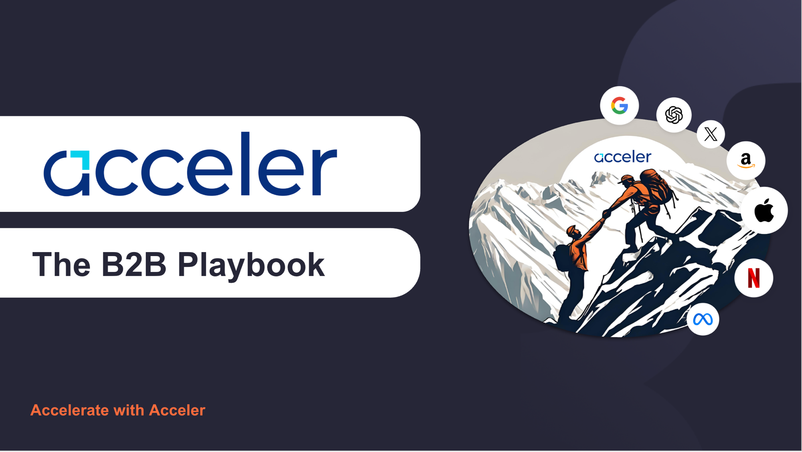
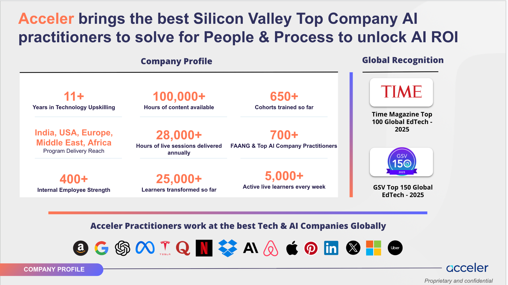
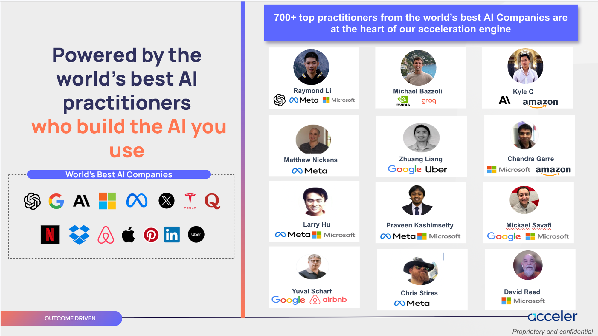
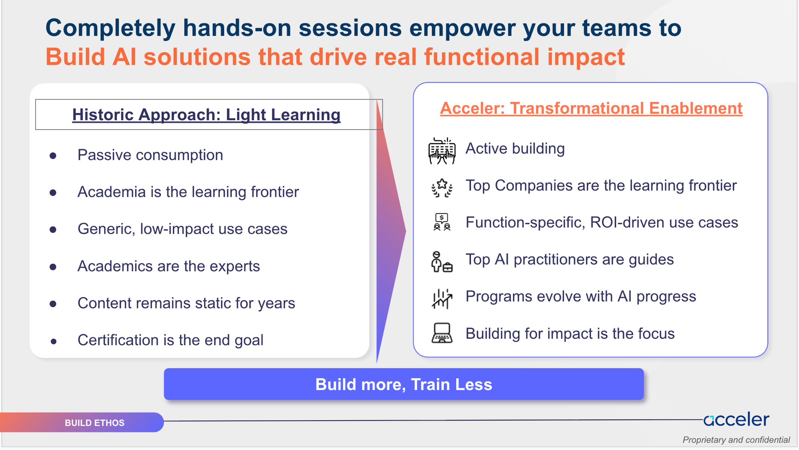
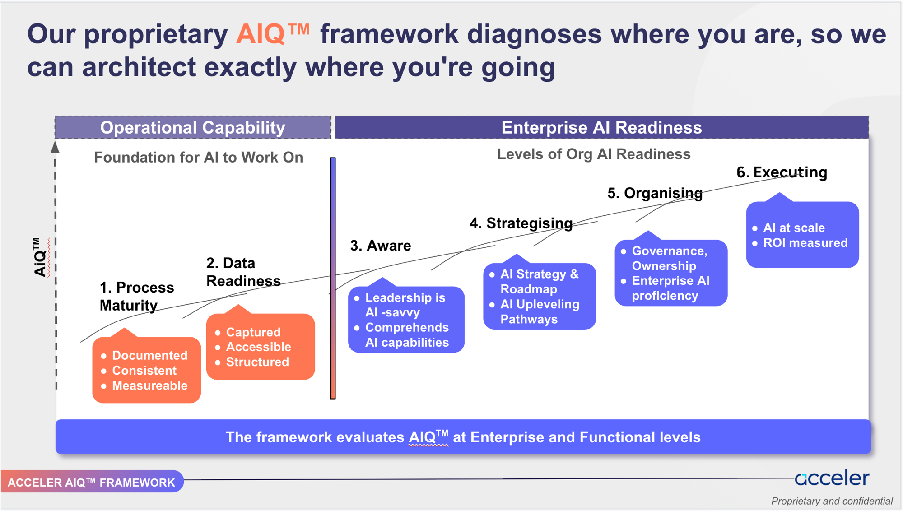
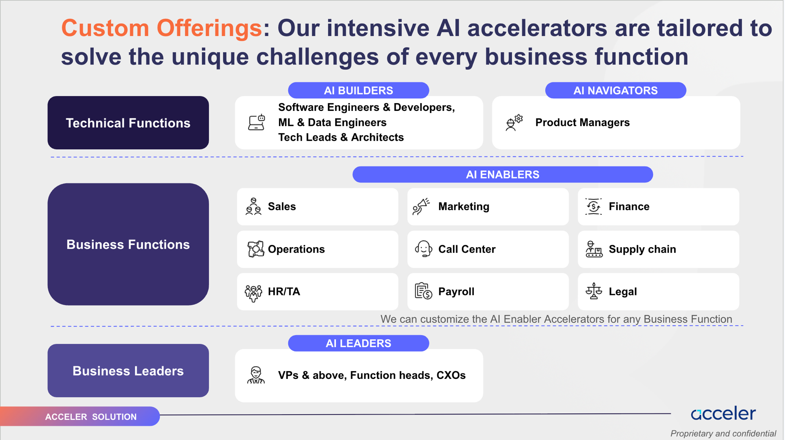
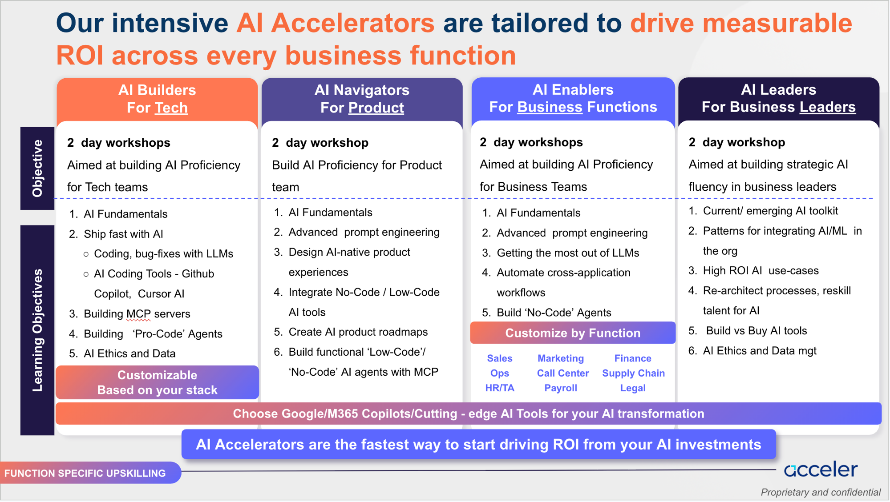
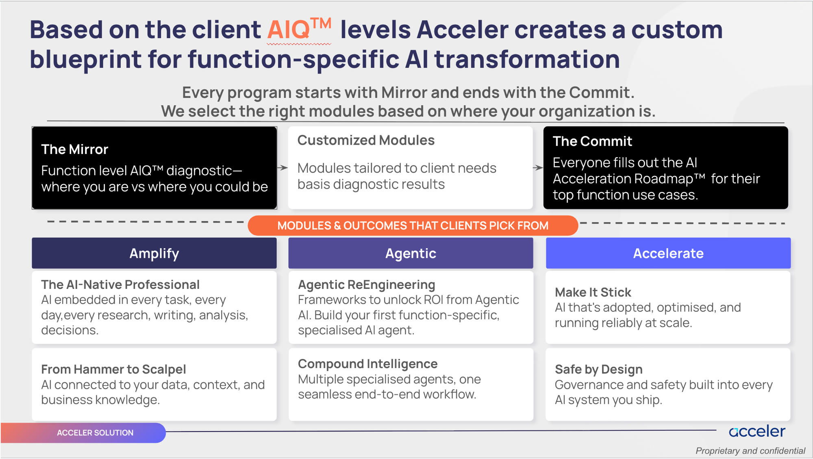
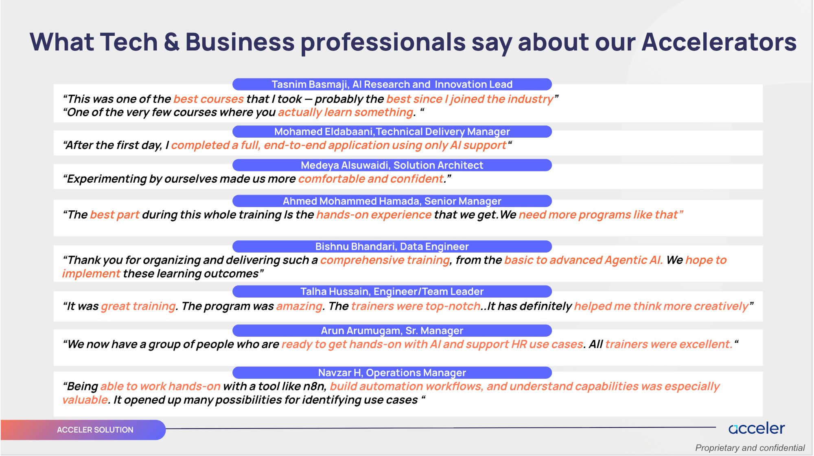

Internal Knowledge Transfer
Pre-Sales → Delivery.
The complete B2B handover playbook · the people, the matching engine, the proposals, the pricing, and post-sales. Built to click through, not read.
👥 From the B2B team
🗓️ June 2026
🖱️ Click everything
What's inside · click any tile to jump
The roadmap.


Start here
The role in one screen.
✅ What this KT is
- The people you route to, and why
- The match funnel: brief → program
- The proposals to model from, by track
- Pricing you can defend in the sheet
- What happens after the deal closes
🎯 How to use it
- Click everything · funnel, tabs, toggles
- Surface is light; depth is behind clicks
- Pair it with the live KT calls
- Edit it inline as the role evolves
- The link index (Part 10) is your hub
0
Learners transformed
0
FAANG+ practitioners
0
Cohorts delivered
0
Hours of content
01
The people
Six brains, one judgment.
Don't CC everyone. Ask "whose brain do I need right now?" · then click.
Cognitive orchestration · click a brain
Who to lean on, for what.
🧭 Aashish
Strategic framing
🔬 Soham
Co-founder · CPTO
⚡ Amit
India Sales
⚙️ Suvansh
Ops reality
🖥️ Tanvinder
Infra & labs
🤝 Shashi
NP Team Lead
🎯 Anshuman
Heads B2B
🚀 Ryan
Co-founder · Sales
📣 Madan
Growth marketing
Sign-off routing · click the geography
Who approves what.
💡
Sign-off is sales: Amit for India, Ryan / Anshuman everywhere else, with Aashish on positioning. Soham (CPTO) technically guides every pre-sales deal; the technical folks are us, the B2B team.
02
From brief to program
The workflows.
A matching engine and a delivery cycle. Click the funnel; watch the flow.
The match funnel · click a stage
Five moves before you draft.
1
📥
Brief lands
2
✅
Discovery match
3
🗂️
Precedent + SME
4
🕸️
Knowledge Graph
5
🤝
NP Team confirm
Match funnel · step 4, live
The Knowledge Graph, live.
Nodes: Programs · Accounts · Instructors · Tools · Topics · drag · scroll to zoom · click a node · ⌕ search
Knowledge Graph · second view · delivered curriculum
What we've delivered.
Clients → Programs → Modules → Topics + Tools · 16 delivered programs.
Open full-screen →
End-to-end · RFP to client send
Seven steps, mapped to days.
Day 0
📥
Requirement
RFP / sales handoff
Day 0–1
❓
Clarify
Fire the 6 musts
Day 1
🤝
Align
15 min · Soham + sales
Day 1–2
📝
Draft
Curriculum + pricing
Day 2
🔍
Review
Soham·Aashish·Amit
2 days
🎞️
Deck
Bottleneck
Day 4–5
📤
Send
Follow up <48h
🎯
Highest-leverage move of the year: the Day-1 15-min alignment call with Soham + sales before drafting cuts internal revisions from 2 → 1.
03
What we sell
AIQ™ → four personas.
Diagnose maturity, then pitch the shape. Explore both.


AIQ™ · the positioning anchor
Diagnose first, then prescribe.
1
LLMs
Working with LLMs
2
Copilots
Productivity with AI copilots
3
Best-in-class AI tools
Solutions with top AI tools
4
Agents / GenAI apps
Build complex agents
5
Modern ML
Build on advanced models
6
Deep ML
Build complex ML models
📐 Maturity model (v2)
Operational capability → Process Maturity · Data Readiness
Enterprise readiness → Aware → Strategising → Organising → Executing
Score 1–4 each → grid position → the real bottleneck.
Enterprise readiness → Aware → Strategising → Organising → Executing
Score 1–4 each → grid position → the real bottleneck.
🧭 How tracks map
Enablers live in Augmentation · Builders / Navigators climb into Transformation · Leaders learn to read the whole grid.


Track explorer · click a persona
One spine, five depths.

Template picker · choose, get a recommendation
Which shape do I pitch?
1 · Who is the audience?
2 · How standard is the scope?
What we sell · the new Leaders format
AI for Leaders, build-first.
📅 Day 1 · Strategy (in person)
Led by Ryan & Anshuman · the strategy and framing day, as before.
🛠️ Day 2 · Hands-on build (Madan)
- First 30 min: Madan intro + platform walkthrough + a sample use case
- Split into groups · a dedicated TA per group, live in MS Teams
- Build with the Build Session Guide + TA help until everyone completes
3.5 → 4.5★
Rating after the new format
🔗 Live assets
The build lab + the step-by-step guide groups follow.
📈
Build-first + a TA per group lifted completion and ratings from 3.5 → 4.5. Kartika & Tanmaya ran this.
What we sell · the leadership operating model
Two fixed bookends, six you choose.
🪞 The Mirror · always opens
AIQ diagnostic across six axes · spider chart + gap view. Baselines the whole room so everyone starts from the same honest picture.
🤝 The Commit · always closes
Leadership Canvas workshop · public commitments + scheduled accountability follow-ups. The commitment is our reconnect / renewal hook.
Pick 2–4 of the six · by AI-journey stage (discovery · surveys · AIQ)
🗺️ The Map
Understand Architecture literacy · LLMs, RAG, agents, build-vs-buy.
🔍 The Lens
Understand Dual-mode demos + case studies of what AI can do now.
🩻 The X-Ray
Apply Process redesign · decisions, data moves, actions.
🛠️ The Build
Apply Hands-on AI tools for real tasks · four tracks.
🔄 The Rewire
Change Operating-model shift · the structural barriers.
🧰 The Toolkit
Change Build-vs-buy, vendor & governance frameworks.
🧩
Mix, match & price by the modules chosen. SMEs come in only when a module needs them (that's the expense + logistics); Ryan & Aashish deliver the rest. Live module menu →
Leadership · a worked example · click to open
Constance, end to end.
🧩
The Module Menu
Assemble any leadership program · 2 fixed + 6 choosable.
OPEN →
🎤
Constance · Session Deck
The actual built leadership session deck.
OPEN →
🪞
Constance · AIQ Report
The Mirror output · six-axis diagnostic, written up.
OPEN →
💰
Constance · aiROI
The diagnostic turned into a money story.
OPEN →
🎬
Common Session Deck
Madan's common deck · run at the e& PPF · Yettel / CETIN leadership sessions.
OPEN →
🧪
Build Lab
The grouped hands-on build environment.
OPEN →
📋
Build Session Guide
The step-by-step guide each group follows.
OPEN →
📥
AIQ Form · filled (real)
An actual completed intake-form response · ANSR sample.
OPEN →
🪞
AIQ Report · real
The report that filled form produced · ANSR sample.
OPEN →
📣
e& PPF · the common-session pattern. Shared Common Session Deck across 3–4 locations (Prague & Serbia / CETIN), then a grouped build session (groups + a TA each) via the Build Lab + Build Session Guide. Live AIQ intake forms: Prague 29–30 Jun → · Serbia 2–3 Jul →
04
Pricing
Built bottom-up.
Curriculum free when internal · dry run only first time · ×2 overheads · 40% margin.
The pricing engine · how a number is built
Cost → overheads → margin.
🧱
BASE
Curriculum + Prep + Dry Run + Live + TA + Infra
×2
+ Overheads
≈ 100% of base → TOTAL COST
📈
+ Margin
≈ 40% → PRICING (round clean)
🧩 Curriculum = ₹0 when internal
Default: we build content internally, so curriculum is free. Billed only for genuinely new / external content (hours × ₹24,864 × % new).
🔁 Dry Run only the first time
A full SME dry run runs on first-ever delivery. Delivered before → dry run ₹0 and prep halves. That's the 2nd-batch saving.
📊
Blended rate ₹5,225/hr (accelerator) · ₹5,500/hr (masterclass). Prep & Review bills at the same rate as live delivery. INR for India, USD for US · never mixed.
Edelweiss Builders Accelerator (5d) · click the toggle
1st batch vs 2nd batch.
Curriculum
Prep & Review
SME Dry Run
Live Delivery
BASE
+ Overheads → TOTAL
+ Margin → PRICING
⚡
2nd batch ≈ 53% of the first · prep halves, dry run zeroes, curriculum stays ₹0. Never cut hours; cut cost components.
Tools, VM & benchmarks · the infra per learner
What infra costs.
| Paid tools / learner / month | Cost |
|---|---|
| GitHub Copilot (Business) | $19 |
| LLM API (OpenAI / Anthropic) | $3 |
| Azure · SQL · Functions · Key Vault | $60 |
| Total · with / without Azure | ₹7,872 / ₹2,112 |
Free / OSS = $0: Docker · LangChain · LangGraph · LangSmith · CrewAI · MCP/A2A · FAISS · Chroma · HF · LoRA/PEFT · FastAPI · VS Code
| All-in (tools + VM / learner) | 5-day | 8-day |
|---|---|---|
| VM only (₹500 / day) | ₹5,000 | ₹7,000 |
| With Azure | ₹12,872 | ₹22,744 |
| Without Azure | ₹7,112 | ₹11,224 |
🎓 Masterclass
3 hrs · ₹5,500/hr → base ₹66,000 → ₹1,84,800.
📉 Volume
4→5% · 5→10% · 6→15% · 7→20%.
💡
Other quoted refs: BGSW Adv Builder ₹70,000/pax (35% markup) · LVT 5-day $3,021/learner (40%). Margin trend: 25% → 35% → 40%.
05
Discovery
Hold below 80%.
Tick the reds and watch the gauge. Generic proposals lose more deals than no proposals.
The 14 reds · tick what you've confirmed
Are you ready to draft?
0%
Hold
✓
Actual problem (not "need AI")✓
Success in 3 months · a number✓
Who decides & who pays✓
What participants actually do✓
How many · how many batches✓
Virtual / in-person · time zones✓
How much time (½d / 1d / 2d)✓
AI tools they have today✓
Will IT block anything?✓
The task they should DO after✓
Budget range✓
Decision date✓
Approver named✓
Existing content / data accessDiscovery · the live checklist
Run it on every brief.
Auto-scores the brief · flags gaps. Below 80% complete, hold the proposal or book a 30-min follow-up.
Open full-screen →
06
Patterns
What to do in the moment.
Click a scenario to open the play: read, move, avoid.
Scenarios · click to open the play
Worked examples.
🪶 "We need AI training" · no specifics
+
Read
Discovery < 50%. Generic proposals lose more deals than no proposals.
Move
Send the 6 must-asks; book a 30-min call within 48h.
Avoid
A generic "AI Builders for $X". It gets politely ignored.
💰 India pricing exceeds budget
+
Read
Aim 40–70% reduction. They can't afford ₹6K/hr instructors at scale.
Move
Tier-1 India SME → exclude Nuvepro → bigger batch → blended. Combine 2–3.
Avoid
Cutting hours. The hours are the program.
🔎 No SME for that domain
+
Read
10% edge case (Capgemini AI-for-Sales pattern).
Move
Send sample LinkedIn + instructor profiles to stay warm; Shashi/NP source in parallel.
Avoid
Silence. Clients read it as "they don't have it".
⏱️ Proposal needed in 24 hours
+
Read
You won't get the full cycle. Pick where to cut before drafting.
Move
Skip to the deck; Aashish/Amit take commercials; you fill curriculum. Soham via 5-min call.
Avoid
Doing it all solo. Rush mode is a team sport · call, don't email.
Part 07 · Accounts · click to filter
The book you're inheriting.
e& (Etisalat)Priority
UAE telco. Delivered: Builder Pro/Low/No-Code (Nov-Dec + Q1), AI for Leaders, Pilot. PPF Leaders sessions · Hungary · Prague · Serbia / CETIN · Yettel. Now: GT graduate-training RFP + sentiment-analysis impact build (John · Ruth).
LVTPriority · P0
3-day Claude Code AI-Assisted Dev Bootcamp · US. Leads Kyle Cheng · Jeevendra Singh. Brief →
CornerstoneDelivered
Sales Team · AI for PMs · 3-hr Masterclass (4.85/5). Reseller channel.
BoschDelivered
AI Builder Masterclass (MCP & A2A). Elevate tiers proposal in-flight.
DeloitteDelivered
AI for Leaders, incl. multi-agent.
ETSDelivered
Leadership Program.
Lowe'sDelivered
AI Program · live class content.
NucleusDelivered
Masterclass. India AI-Builders reference pattern.
Yettel (Serbia)Delivered
AI program · virtual labs.
LatentViewIn-flight
Analytics AI program. India.
CapgeminiIn-flight
AI for Sales. SME availability gated it.
VoyaIn-flight
Finance + HR 2-day tracks + capstone. US.
ANSRIn-flight
GCC leaders demo · Claude Code + Cowork.
IGT SolutionsIn-flight
M365 Copilot for CX teams.
Diebold NixdorfIn-flight
AI for Sales. Capability-map showcase built for them.
Booking HoldingsReference
14 proposals → 4d/24h GenAI Eng Accelerator.
EdelweissReference
8d · 54 live hrs · blended. ₹18.2L.
GryphonReference
PE firm. FDE programme + APR add-on.
MCB MauritiusReference
Via Ryan. LMS-heavy. Foundation + Champion.

08
Post-sales & content
After the deal closes.
Hand off intent + commercials. Delivery builds the rest.
The handoff · pre-sales → delivery
Hand off intent. Delivery builds the rest.
📦
You hand off
Deck · costing · commercials · coverage plan · onboarding
🏗️
Build
Live Class decks + Colab notebooks
🎤
Dry run → deliver
Publish Uplevel Shared · live delivery
📝
Grade + feedback
Solution/MCQ keys · Feedback & Next-Steps
<Program>/ <Module>/
├── Instructor's Copy/ master
├── Uplevel Shared/ learner-facing
├── Live Class/ .pptx + .ipynb
└── Assignment/ + Solution + MCQ
├── Instructor's Copy/ master
├── Uplevel Shared/ learner-facing
├── Live Class/ .pptx + .ipynb
└── Assignment/ + Solution + MCQ
🗂️ All content lives here
Content (Post Sales) →
Likely a Shared Drive · confirm the new POCs have access. Recordings/certs usually on the LMS.
Likely a Shared Drive · confirm the new POCs have access. Recordings/certs usually on the LMS.
Post-sales · one program, end to end
The full program cycle.
Open
🎬
Orientation
Slides + onboarding form
Baseline
📋
Pre-Assess
Pre-test · every learner
Setup
🖥️
Labs + creds
Nuvepro VMs · API keys
Day 1–4
🎤
Deliver
Session + feedback daily
Close
🎓
Closing
Ceremony + NPS
Measure
📊
Post-Assess
Post-test vs pre
Renewal
📈
Impact Report
The reconnect hook
+88%
Avg pre→post improvement
4
Delivery days · feedback each
19
Ops-sheet tabs per cohort
2
Cohorts · shared OneDrive
Post-sales · the live ops sheet · one tab per job
How Ops runs a cohort.
👥 People
- Learner Profile Analysis
- Onboarding Form Responses
- Final List (Cohort)
🖥️ Infra & cost
- VM Credentials
- VM List (per SME)
- Remaining-Assign Creds
- AI Tools & Nuvepro Cost
🎬 Run the days
- Schedule & Instructor
- Content Changes
- NP + Ops Checklists
- Attendance · Class Ratings
📊 Prove impact
- Pre Test · Post Test
- Pre vs Post · Analysis
- Agentic Fest Planning
💸 What infra costs (this cohort)
Nuvepro VM labs ₹3,30,000 (₹500/learner/day) + AI tools ₹94,953 (n8n, ChatGPT, OpenAI & SERP keys, MS) = ₹4,24,953 all-in. The cost tab does this math live.
🔗 Open it
Post-sales · every doc, in order · click any link
The program document set.
| Stage | Documents |
|---|---|
| 🧱 Setup | Program Brochure · Communication Docs · Virtual Lab Setup · Pre-Req Doc (named docs · in OneDrive) |
| 📝 Intake | Onboarding Form · Pre-Program Assessment |
| 🎬 Deliver | Orientation Slides · Day 1 PPT/fb · Day 2 PPT/fb · Day 3 PPT/fb · Day 4 PPT/fb + NPS |
| 🎓 Close | Closing Ceremony Slides · Post-Program Assessment |
| 🗂️ Archive | OneDrive · Cohort 1 · OneDrive · Cohort 2 |
📦
This is the e& AI Builder (Low Code) 4-day set · the template every delivered program follows. Named docs (brochure, comms, orientation, closing) live in the cohort OneDrive.
Post-sales · grading & proof · click to open
Assignments, grading, impact.
📐
Pro-Code Rubric
The grading rubric template · copy & grade against it.
OPEN →
✅
Sample Gradesheet
Maryam Ebrahim · a filled Post-Program gradesheet.
NAMED DOC
📈
Impact Report
Post-program outcome write-up · the renewal seed.
OPEN →
🎥
Session Recordings
Pro / Low-Code past sessions for reference.
ASK SUVANSH
📊
Hard proof for the renewal conversation: the pre → post jump averaged ≈ 88% on the e& Low Code cohort · the Impact Report is built on exactly this.
09
The assets
Everything, one click away.
Sample proposals, then the operational hub.
Sample proposals · open these week 1
Model from what's won.
| Track · requirement | Open · every number is a link |
|---|---|
| 🎯 Leaders | 1 2 3 4 5 |
| 📘 Basics of APR | 1 |
| ⚙️ Engineers | 1 2 3 4 5 6 7 8 9 10 11 12 13 14 |
| 🧭 AI for PMs | 1 |
| 🔧 AI for Non-Tech | 1 2 3 4 5 6 7 8 9 10 |
| 🛡️ AI for Security / Risk | 1 2 2 = Honeywell, not Fujitsu |
| 💼 AI for VCs | 1 |
Clients behind these, by track
🎯 Akamai · Leaders
🧭 Cornerstone · PMs
🛡️ Honeywell · Security
⚙️ Engineers: Everest · Edelweiss · LVT · Sony · StoneX · Gryphon · BGSW
🔧 Non-Tech: Fiserv · IGT · Voya HR · MCB · Diebold · Schneider
🎯 Leaders also: Constance · LatentView · Voya
📦
Every sample-proposal link, by track. Open one per track in week 1 and read it against the proposal anatomy. Operational links (Tracker, Instructors, Agreements…) are on the next slide.
Master link index · bookmark this
The operational hub.
📊
Tracker (live)
The current B2B pipeline app · deals, stages, owners.
OPEN →
🗒️
Tracker (legacy sheet)
The older pipeline spreadsheet · reference only.
OPEN →
📇
Instructor Pool
700+ by domain. Start matching here.
OPEN →
🧑🏫
Mentor Profiles
Client-ready one-slide bios.
OPEN →
📜
Agreements
NDAs, POs, commercials. Entity: Upward and Onward Inc.
OPEN →
🔄
Cornerstone Resale
CSOD reseller channel · different margin + paper.
OPEN →
🧭
AIQ Framework
Diagnostic + scoring questions.
OPEN →
🎞️
Generic Decks
Intro / who-we-are / four-persona.
OPEN →
✅
Discovery Checklist
The live tool · scores the brief, flags gaps.
OPEN →
🗂️
Content (Post Sales)
All delivered program content.
OPEN →
🔑
Customer-facing brand is Acceler; legal entity is Upward and Onward, Inc. If a link 403s, flag access on day one.
Showcases & live assets · what we can show a client
Proof of capability.
🎥
KT Call · Session 1
Recording of the first KT session.
OPEN →
🎤
Live Session Deck
A Cornerstone live-session deck (by Faiza).
OPEN →
🧭
AI for Leaders · Build Lab
The new build-first Leaders format.
OPEN →
📋
Leaders Build Guide
The step-by-step guide groups follow.
OPEN →
🧑💻
AI in SDLC
Built for ANSR.
OPEN →
🤝
ANSR OSB Partnership
End-to-end India partnership deck.
OPEN →
🎓
Acceler LMS (sample)
End-to-end learning experience demo.
OPEN →
📊
e& Sentiment Analysis
Real-impact build (live app) with John (L&D) & Ruth (HR).
OPEN →
📈
Sentiment · v0 build
The v0 version of the e& sentiment project.
OPEN →
💼
Diebold Sales map
Capability mapping for a sales team.
OPEN →
📑
e& GT RFP · Executives
Graduate-training RFP solution (Jun'26).
OPEN →
📑
e& GT RFP · Technical
Graduate-training technical RFP solution.
OPEN →
✨
These are the "show, don't tell" assets · interactive decks, build labs, a sample LMS, a real client-impact build, and the latest e& GT graduate-training RFP solutions.
Part 10 · Transition · key milestones
Then it's yours.
Milestone 1 · Shadow & absorb
Sit every call. Read this deck + the sample proposals. Run every Acceler OS tab.
Milestone 2 · Drive with a net
First proposals reviewed before Soham, then you own the reviews · pause & call when stuck.
Milestone 3 · Pricing & custom fluency
India pricing scenarios (the slowest muscle) + multi-persona custom: Cornerstone, e&, Gryphon.
Milestone 4 · Own the engine
Take over Mini-UT and the Knowledge Graph. Keep feeding the graph · it improves only if you do.
Milestone 5 · Solo
You run the role end-to-end. Support becomes escalation-only.
Over to you
Go build.
You have the people, the match funnel, the proposals, the commercials, the toolkit, and the plan. The team is an escalation away.